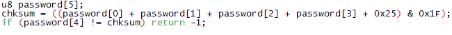
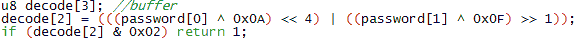
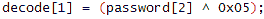
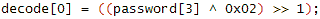
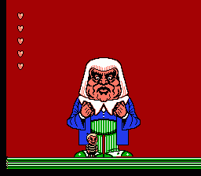

| NEWS | ARTiCLES | PASSGENS | ARCHiVE | ABOUT |
Находим пароль
Первое что надо сделать при вскрытии алгоритмов паролей - это найти введённый пароль в RAM! Для этого можно воспользоваться простым поиском читов. Откроем ром и перейдём на экран ввода пароля. Здесь вводим однин знак “1” (чтобы ввести знак пароля нужно будет нажать А). Затем открываем окно читов в FCEUd через меню NES -> Cheats… С открытым окном читов кликнем Add Cheat(добавить Чит), чтобы открыть Консоль Читов. Здесь вы видите чит сёрч - то, что поможет нам найти введённый пароль в RAM. При начале чит поиска в первую очередь нужно нажать кнопку Reset Search ( Сброс Поиска ). После этого стираем введённую единицу кнопкой B и вводим “2”. Возвращаемся к окну поиска читов и выбираем фильтр “O!=C”. Это означает, что исходное значение ( Original ) не равно текущему ( Current ). Нажмем кнопку “Do search”( произвести поиск ), а потом “Set Original To Current”( установить текущее значение в исходное ), В консоле читов FCEUxd и FCEUXDSP последнее действие проделывается автоматически при нажатии “Do search”. и вернёмся к игре. Теперь вводим три “1”, так что теперь пароль стал “2111”.Вернёмся к читам и поставим фильтр “|O-C|==V2”. Это означает, что разница между исходным и текущимизначениями равна V2. Значение V2 можно вписать в окно слева от фильтров - не пропустишь! В нашем случае V2 должно содержать ноль, потому что первый знак пароля не изменился с момента предыдущего поиска. Нажмём “Do search” ещё раз, потом вернёмся в игру и введём первым знаком пароля “Z”. Теперь нужно будет установить фильтр “O!=C”, так как значение изменилось. Жмем ещё раз на поиск, и так далее пока не остановимся на единственно возможном адресе. Забегая вперёд, могу сказать, что это $043D.
Находим алгоритм проверки пароля
Итак, теперь когда мы знаем где пароль хранится в RAM, нам нужно использовать эти знания чтобы найти код, отвечающий за проверку пароля. Он должен проверить не является ли введённый пароль случайными знаками!
Открываем консоль отладки FCEUd через NES -> Debug, или нажав F1. Теперь вернёмся в игру и введём случайный пароль, например “2211B”. Но перед тем как ввести последнюю букву, установим останов на чтение (BPR) из адреса $043D. Исполнение программы тут же останавливается, так что будем работать в области этой команды. Деактивируем BPR перед тем как продолжить.
С остановленной игрой поставим останов на запись (BPW) в $0441. Это ячейка, в которой содержится наш последний знак пароля. Наконец, вводим последний знак и отладчик остановит выполнение программы из-за второго останова. Его теперь можно удалить - он нам не пригодится. Активируем первый останов и нажмём “Run”! Мы окажемся прямо посреди подпрограммы, отвечающей за расшифровку пароля, с которой и надо разобраться, чтобы написать генератор паролей!
В окне дизассемблера прокрутим вверх пока не встретим первую команду RTS. К счастью, она в строке прямо над адресом PC. Это означает, что программный счётчик (PC) установлен на начало подпрограммы. Так что можно скопировать весь код, начиная с начала подпрограммы и заканчивая первым RTS который встретится. Просто вставим его в блокнот и реверснём его!
Переводим 6502 в Си или другой язык
Начинается весёлая часть - непосредственно делаем генератор паролей! Я в первую очередь просто поверхностно просматриваю полученный код. Сразу видны знакомые адреса, которые содержат введённый пароль. Это хорошо.Теперь взглянем на подпрограмму по маленьким частям.
$BAC8:AD 3D 04 LDA $043D = #$01
$BACB:18 CLC
$BACC:6D 3E 04 ADC $043E = #$01
$BACF:18 CLC
$BAD0:6D 3F 04 ADC $043F = #$00
$BAD3:18 CLC
$BAD4:6D 40 04 ADC $0440 = #$00
$BAD7:18 CLC
$BAD8:69 25 ADC #$25
$BADA:29 1F AND #$1F
$BADC:CD 41 04 CMP $0441 = #$09
$BADF:D0 3A BNE $BB1B Очень простой код. Он загружает первый знак пароля из $043D, потом добавляетэто значение к значениям других трёх знаков пароля. Это самая распространённая из всех чексумм, но дальше эта игра делает что-то другое. После создания чексуммы, она прибавляет $25 к этой величине, чтобы немного её изменить. Наконец, она маскирует её $1F (наибольший знак, который может встретиться в пароле). А потом игра просто сравнивает получившуюся чексумму с последним знаком в пароле. Если они совпадают, то она ветвится в $BB1B.
Проверьте скопированный код, убедитесь, что в нём есть команда по адресу $BB1B. Его может не быть, если вы закончили копировать на первом RTS. $BB1B - очень небольшой кусок кода, который просто возвращает -1, что означает ошибку ( вывод на экран надписи ERROR ).
$BB1B:A9 FF LDA #$FF
$BB1D:60 RTS Только и всего!
Итак, запомнив всё это, давайте напишем часть программы, выполняющую точно такие же действия как и тот код сверху. Я буду использовать Си, так как это мой любимый язык программирования.

Довольно просто, не так ли?
Дальше мы взглянем на следующий кусок кода, который уже несколько сложнее.
$BAE1:AD 3D 04 LDA $043D = #$01
$BAE4:49 0A EOR #$0A
$BAE6:0A ASL
$BAE7:0A ASL
$BAE8:0A ASL
$BAE9:0A ASL
$BAEA:8D 3B 04 STA $043B = #$00
$BAED:AD 3E 04 LDA $043E = #$01
$BAF0:49 0F EOR #$0F
$BAF2:4A LSR
$BAF3:0D 3B 04 ORA $043B = #$00
$BAF6:8D 3B 04 STA $043B = #$00
$BAF9:29 02 AND #$02
$BAFB:D0 1E BNE $BB1B Загружается первый знак пароля, затем он XOR’ится с $0A, и четыре раза логически сдвигается влево. Затем он временно сохраняется, а загружается второй знак пароля, который XOR’ится c $0F. Наконец, значение сдвигается вправо один раз, после чего оно OR’ится с предыдущим полученным занчением. Кроме того, есть небольшая проверка на то выставлен ли первый бит. Если бит равен единице, то подпрограмма возвращает ошибку ( зачем нужна эта проверка - см. ниже ).

Потом вы увидите почему я использовал массив. Обычно я прогоняю алгоритмы несколько раз, перед тем как перевести их. Следующий кусок кода намного проще и требует намного меньше работы.
$BAFD:AD 3F 04 LDA $043F = #$00
$BB00:49 05 EOR #$05
$BB02:8D 37 04 STA $0437 = #$00 Загружается третий знак, XOR’ится с $05, сохраняется в буффер!
 Видите?! Так просто!!
$BB05:AD 40 04 LDA $0440 = #$00
$BB08:49 02 EOR #$02
$BB0A:4A LSR
$BB0B:8D 38 04 STA $0438 = #$05 Загружает четвёртый знак, XOR’ит с $02, сдвигает один раз вправо и сохраняет в буффер!

Остаток алгоритма по большей части бесполезен, так что его можно смело проигнорировать. Всё что он делает, так это просто заполняет какие-то ячейки памяти.
Собираем всё вместе
Всё что осталось сделать, это собрать всё это вместе в одну программу и у нас будет полнофункциональный контролёр паролей. Ну это, конечно, здорово, но ведь нам нужна программа, которая генерирует пароли, а не проверяет их! Как наша задача соотносится с тем что мы написали? В 9 из 10 случаев, ответ будет “РЕВЕРСИРОВАТЬ!” Да, точно: возьмите программу и перепишите её с точностью до наоборот. Например, вот полная функция проверки пароля.
Надеюсь, вы поняли как я перевернул программу. Всё нужно делать наоборот: например, вместо прибавить нужно вычитать. Обратите внимание на маску, которую я сделал для password[1]. Эти команды просто предотвращают превышение максимальновозможного занчения знака пароля ($1F). В большинстве случаев применять такие сложные действия проделывать и не придётся: куда легче будет дойти до того места, где происходит генерирование пароля самой игрой и немного подсмотреть алгоритм ;)
Теперь просто соберём это всё в милую программку и готово!
Понимание Данных
Секрет изготовления своего генератора паролей в понимании данных, изымаемых из знаков пароля. Я просто сравнивал данные буфферов (buffer) с предметами, которые мне давали. Вкратце: buffer[0] - десятки жизней героя, buffer[1] - единицы жизней героя и, наконец, в buffer[2] хранятся данные о числе сердец и спасённых членах семьи.
Эта секция обычно доставляет наибольшие проблемы начинающим. Ну с жизнями ещё куда не шло: можно скомпилировать генератор, подставить в значения буферов какие-то числа и посмотреть результат. Жизни видно сразу без напряжения. А вот со вторым буфером я в свое время так и не разобрался: исписал два листа вдоль и поперёк всевозможными комбинациями, но так и не понял принципа. Всё дело в “битовой логике”. Логические операции с битами очень часто используются для хранения данных в пароле. Ну, конечно, далеко не только для этого (взгляните в любое место кода любой игры на NES (да вообще, в любой ассемблерный листинг) - везде логические операции). Это основы, которыми просто необходимо овладеть. Для тех кто до сих пор не подозревал о существовании логических операций рекомендуется почитать вот эту записку. В дальнейшем будем исследовать ячейку, содержащую decode[2] ($043B). Поставим останов на чтение из ячейки, обозначенной нами как decode[2], и посмотрим как же её используют после формирования из данных пароля.
$C6F6:AD 3B 04 LDA $043B = #$04
$C6F9:A2 02 LDX #$02(две жизни есть всегда!)
$C6FB:0A ASL
$C6FC:90 01 BCC $C6FF
$C6FE:E8 INX
$C6FF:0A ASL
$C700:90 01 BCC $C703
$C702:E8 INX
$C703:0A ASL
$C704:90 01 BCC $C707
$C706:E8 INX
$C707:8E 36 04 STX $0436 = #$03; число возможных жизней(доступны, но не заполнены)
$C70A:8E 35 04 STX $0435 = #$02; число заполненных жизней Как видите, заполненные жизни всегда будут равны возможным, потому что запись восстанавливает жизни. Судя по коду, наибольшее возможное число - 5, скажем, если decode[2] равен $E0. Так и есть - в игре максимум пять сердец. Почему-то при загрузке уровня произошло только такое использование этого байта. Куда же ушли остальные (пока не использованные) пять бит?! Может из ячейки будут читать, когда уже надо выводить информацию о тех, кого спас герой, т.е. при нажатии на паузу? Останов произошел по адресу B8С4, однако там страшная процедура, разобраться в которой под силу только далеко не начинающему хакеру. А так как мы не из таких, то легче, а самое главное, быстрее будет просто подставлять нужные нам неизвестные пять бит в память приставки и посмотрим что будет. Подставляем и нажимаем на паузу - данные пересчитываются.
Итак:
младший бит: Гомез
бит 1: Мортиша (см. ниже)
бит 2: Дядя Фестер
бит 3: Бабуля
бит 4: Венздей
Остаётся вопрос: почему же игра так упорно не желает, чтобы пароль хранил информацию о спасении Мортиши? Посмотрите на команду
$BAF9:29 02 AND #$02
$BAFB:D0 1E BNE $BB1B Проверяет спасена ли Мортиша и если да, то выводит сообщение о неправильном пароле - пароля со спасенной женой Гомеза не должно существовать. Те кто проходил игру знают, что она нелинейна: родственников можно спасать практически в любом порядке, однако последней всегда должна быть Мортиша, т.к. дверь, за которой она заточена, и где скрывается финальный босс - Судья, заперта до тех пор, пока герой не спасёт всех остальных. Нам повезло, что информация о героях считывается во время паузы, а не во время анализа пароля, потому что если бы мы вписывали значения до принятия пароля, то он бы просто не был принят (разумеется, если мы не поменяем код ;))
Для тех, кому интересно “а что будет, если…” могу сообщить: если ввести пароль, в котором все родственники, включая Мортишу будут спасены и вновь придти к Судье, то можно будет наблюдать такую безобразную картину:

Судья неподвижен, и кроме него и Пагсли ничего больше не загружается. Более того, очевидно, код, который проверяет спасена ли Мортиша используется прямо во время поединка, так что подтасовывая байты в ячейке можно периодически заставлятьсудью вставать, а уровень - становиться опустошённым. А что касается того пароля, который выдаётся по окончании игры, то это обычный пароль с четырьмя спасёнными членами семьи (Мортиша опять в заточении), и не понятно зачем он вообще нужен.